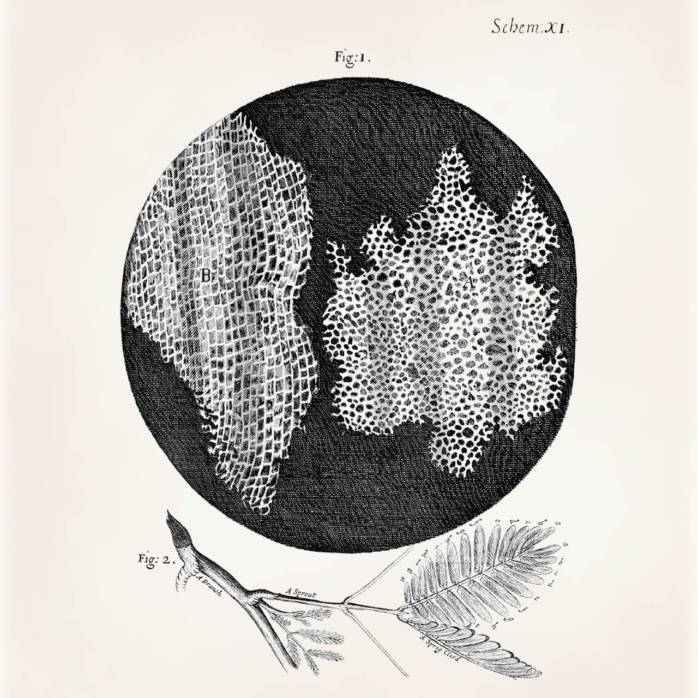
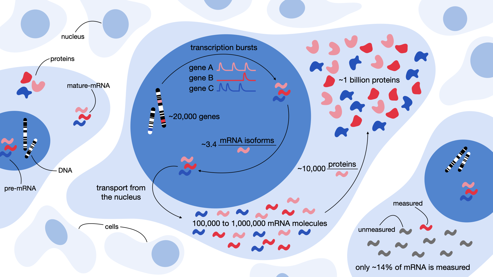

2. 单细胞 RNA 测序#
关键要点
测序技术经历了从 Sanger 测序 到 高通量NGS 到 长读长实时测序,也称为第一，第二，第三代测序。
ScRNA-Seq允许分析基因表达 在单细胞水平上,发现细胞异质性和稀有细胞类型，这些细胞类型往往被批量 RNA-Seq 掩盖。
在scRNA-Seq中，转录本量化将原始数据转换为每个细胞的估计转录本计数表。全长 方案捕获完整的转录本。基于标签 方案只对转录本的 3′ 端或 5′ 端进行测序。
转录发生在 随机性爆发 并在一个典型的哺乳动物细胞中，总共产生 10 万到 100 万个 mRNA 分子。
我们依据细胞分离方式，将 scRNA-seq 技术分为两大类： 液滴 （水性微滴）或 物理隔室 （例如孔）。
本章简要介绍应用最广泛的单细胞核糖核酸（RNA) 测序测定和相关的基本分子生物学概念。多模态 或空间实验方法不在此处讨论，而是在相应的高级章节中介绍。所有 测序 实验方法都各有优势和局限，数据分析人员必须了解这些，才能意识到数据中可能存在的偏差。
2.1. 生命的基石#
正如我们所理解的，生命是区分生命体与死亡或无生命之物的特征。“生命”一词的大多数定义都共享一个共同的实体—— 细胞。细胞是开放系统，能够维持稳态、进行新陈代谢、生长、适应环境、繁殖、对刺激作出响应并实现自我组织。因此，细胞是生命的基本构成单元。它们最早于 1665 年由英国科学家 Robert Hooke 发现。Hooke 用一台十分简陋的显微镜观察了一薄片软木，惊讶地发现这层切片看上去很像蜂巢。他将这些微小的单元命名为“细胞”。
{kind=link}

图2.1 Robert Hooke 绘制的软木细胞图。图片取自《显微图谱》（Micrographia）。#
1839 年，Matthias Jakob Schleiden 和 Theodor Schwann 首次提出了细胞学说，指出所有生物都由细胞构成。自细胞学说最初提出以来，研究人员发现所有细胞的化学组成几乎相同，并表现出一种动态的信息流动，即以脱氧核糖核酸（DNA）的形式将遗传密码从一个细胞传递到另一个细胞。细胞可分为两大类：真核生物和原核生物。真核细胞含有细胞核，核膜将染色体包裹其中；而原核细胞只有一个拟核区域，并没有真正的细胞核。细胞核中存放着细胞的基因组 DNA，这正是它们被称为真核生物的原因： Nucleus 在拉丁语中意为“果仁”或“种子”。DNA 复制机器读取储存在细胞核 DNA 中的遗传信息，从而完成自我复制，维持生命周期的延续。真核生物的 DNA 被分成若干条线性的束，称为染色体，在细胞核分裂时由微管纺锤体加以分离。理解隐藏在 DNA 中的遗传信息，是理解众多演化过程和疾病相关过程的关键。
测序是解读 DNA 核苷酸排列顺序的过程。它主要用于揭示某一特定 DNA 片段、一个完整基因组、乃至复杂微生物组所携带的遗传信息。DNA 测序使研究人员能够确定基因的位置、功能与调控方式。例如，它可以揭示诸如开放阅读框（ORF）、起始与终止密码子之间的蛋白质编码序列等遗传特征，或 CpG 岛屿，表明 启动子 区域。另一个广泛的应用领域是进化分析，对来自不同生物的同源DNA序列进行比较。DNA测序还可以用于突变与疾病之间的关联，有时甚至用于抗病，认为这是最有价值的应用之一。
2.2. 测序简史#
2.2.1. 第一代测序#
尽管早在 1869 年 Friedrich Miescher 就首次分离出了 DNA，科学界却又花了 100 多年才发展出高通量测序技术。1953 年，Watson、Crick 和 Franklin 发现了 DNA 的结构；1965 年，Robert Holley 完成了第一个 tRNA 的测序。七年之后，即 1972 年，Walter Fiers 首次对一个完整的基因（噬菌体 MS2 的外壳蛋白）完成了测序——他利用 RNase 消化病毒 RNA、分离寡核苷酸，最后借助电泳和色谱法将它们分离开来 [Jou et al., 1972]。与此同时，Frederick Sanger 开发了一种 DNA 测序方法，使用经放射性标记、部分消化的片段，称为“链终止法”，更通俗的叫法是“Sanger 测序”。尽管 Sanger 测序至今仍在使用，但它存在若干不足，包括缺乏自动化和耗时较长。1987 年，Leroy Hood 和 Michael Hunkapiller 开发了 ABI 370——一种使 Sanger 测序过程自动化的仪器。其最关键的创新成就，是用荧光染料代替放射性分子来自动标记 DNA 片段。这一变化不仅使该方法操作起来更安全，也让计算机得以分析所获得的数据 [Hood et al., 1987].
优势
Sanger测序简单且可负担。
如果正确，错误率非常低(<0.001%).
局限性
Sanger方法只能对大约300至1000个碱基对的短片DNA进行测序。
Sanger 序列在前 15 至 40 个碱基处的质量往往较差，因为这正是引物结合的区域。
测序质量在 700 到 900 个碱基之后开始下降。
如果被测序的 DNA 片段经过克隆，部分克隆载体序列（一种用于复制、储存和扩增基因的 DNA 载体）可能会混入最终的序列中。
就每个测序碱基的成本而言，Sanger 测序比第二代或第三代测序更昂贵。
2.2.2. 第二代测序#
1996 年，也就是 Sanger 测序发表 9 年后，Mostafa Ronaghi、Mathias Uhlen 和 Pȧl Nyŕen 开发了焦磷酸测序（pyrosequencing），推动了 DNA 测序技术的变革，也标志着第二代测序的开端。第二代测序也称下一代测序（NGS），主要依赖实验流程的进一步自动化、计算机的使用，以及反应体系的小型化。焦磷酸测序通过检测测序过程中焦磷酸释放所产生的发光信号来读出序列，这一过程也常被称为“边合成边测序”（sequencing-by-synthesis）。两年后，Shankar Balasubramanian 和 David Klenerman 在 Solexa 公司开发并改造了边合成边测序流程，引入了使用荧光染料的新方法。Solexa 的技术后来也成为 Illumina 测序仪的基础，而 Illumina 测序仪至今仍占据市场主导地位。2005 年推出的 Roche 454 测序仪，是第一台在单台自动化设备中完整实现焦磷酸测序流程的测序仪。Life Technologies 随后推出了其他平台，包括 2007 年的 SOLiD（一种“边连接边测序”系统）和 2011 年的 Ion Torrent（在新 DNA 合成过程中检测氢离子）。一般来说，边合成边测序是在不断延伸的 DNA 链上逐个加入单个核苷酸，并检测每一次加入；而边连接边测序则通过检测短 DNA 探针与片段的连接来确定序列。
优势
第二代测序往往是关于所需化学品的最便宜的选择。
即使是极少量的样本材料，仍可用作输入。
高敏感度检测低频变种和全面基因组覆盖。
支持样本多重（multiplexing），通量高。
能够同时对数千个基因进行测序。
局限性
测序仪很昂贵，往往必须与同事共享。
第二代测序仪是大型的，固定的机器，不是为野外工作设计的。
一般来说，第二代测序会产生许多较短的测序片段（reads），它们难以用于从头组装新基因组。
测序结果的质量取决于参考基因组。
2.2.3. 第三代测序#
第三代测序（现今也称下一代测序）为市场带来了两项创新。其一是长读长测序，它能检测到远比第二代测序所产生的片段更长的核苷酸片段。典型的 Illumina 短读长测序仪依型号不同产生 75 到 300 个碱基对的片段，而第三代测序仪可以读取数万个碱基对。这对于在没有参考基因组的情况下从头组装新基因组尤为重要。其二，实时测序能力是第三代测序的另一项重大进步。再结合体积小巧、且无需其他复杂仪器来完成测序化学反应的便携式测序仪，测序如今已“可现场进行”，甚至能在远离实验室的地方边采样边测序。
关于测序长度的说明
1个碱基对(bp)
1 千碱基对（kb）= 1,000 bp
1 兆碱基对（Mb）= 1,000,000 bp
1 吉碱基对（Gb）= 1,000,000,000 bp
太平洋生物科学(PacBio)于2010年引入了零模态波导测序，该测序使用所谓的含有单一DNA聚合酶的纳米孔。这使得任何单核苷酸的结合都可以由纳米孔下方的检测器直接观察到。每种核苷酸的标签上都贴有特定的荧光染料，在加入过程中发出荧光信号，这些信号随后被测量为序列读出。从PacBio测序仪获得的读数通常为8至15kb,有可能达到70kb.
Oxford Nanopore Technologies 于 2012 年首次推出了便携式的 MinION 设备。MinION 及其后续的 GridION 和 PromethION 产品线，是用于 DNA/RNA 的测序仪，能够产生超过 2 Mb 的读段。通常，纳米孔单细胞文库生成的 cDNA 转录本长度一般为 900 bp 到 2.7 kb。值得注意的是，MinION 测序设备小到可以放在手掌中。Oxford Nanopore 测序仪的理念是：在核酸通过蛋白质纳米孔迁移时，检测电流的变化[Jain et al., 2016].
优势
长读将允许大型新基因组的组装。
测序仪是可携带的，使其适合实地工作。
有可能直接检测DNA和RNA序列的表观遗传修饰。
飞速! 第三代测序仪速度快。
局限性
一些第三代测序仪的错误率高于第二代测序仪（例如，Roche 新推出的“扩展测序”技术就试图解决这一问题 [Jain et al., 2016] [Roche, 2025]).
试剂一般比第二代测序更贵。
不同代际测序技术的比较
Name |
最大读长度 (kb) |
准确性(%) |
成本（美元/Gb） |
吞吐量（Mb/年） |
代际 |
|---|---|---|---|---|---|
Illumina NextSeq 550. |
0.15 |
>99.9 |
>47,782 |
50-63 |
2 |
Illumina NovaSeq 6000 |
0.25 |
>99.9 |
10-35 |
>1,194,545 |
2 |
Sanger测序( 如 ThemoFisher) |
1b |
99.99a |
500,000c |
0.73d |
1 |
PacBio（Sequel II，HiFi） |
>20 |
>99 |
43–86 |
10,220 |
3 |
PacBio（Sequel II，CLR） |
>200 |
87–92 |
13-26 |
93,440 |
3 |
Nanopore（PromethION） |
>1,000 |
87–98 |
21-42 |
3,153,600 |
3 |
Nanopore（MinION/GridION） |
>1,500 |
87–98 |
50-2,000 |
913-109,500 |
3 |
2.3. NGS 流程概览#
尽管存在各种NGS技术，但DNA测序的一般步骤(因此反转录RNA)基本相同。不同之处主要在于各自测序技术的化学。
2.4. RNA 测序#
目前为止，我们只是引入了测序法，其中未提及的假设是DNA正在被测序。然而，了解一个生物的DNA序列及其调控元素的位置，却很少告诉我们细胞的动态和实时过程。RNA测序(RNA-Seq)允许科学家在测序时以基因表达剖面的形式获得细胞，组织或生物的快照。这种信息可用于检测疾病状态因治疗，环境因素，基因型等实验条件而发生的变化。
RNA-Seq主要遵循DNA测序方案，但包含一个反向转录步骤，其中 互补 DNA（cDNA） 由 RNA 模板合成。与基于微阵列的检测或定量逆转录 PCR 等方法不同，现代 RNA 测序可以对转录本进行无偏采样；而前述方法需要设计探针来专门靶向感兴趣的区域。基于微阵列的检测 使用探针（即互补序列）来检测感兴趣的特定序列（如基因）。定量逆转录 PCR 通过监测 PCR 过程中互补 DNA（cDNA）分子的扩增情况，来测量目标 RNA 的量。
所获得的基因表达谱还能进一步用于检测基因异构体、基因融合、单核苷酸变异以及许多其他有趣的特性。现代 RNA 测序不受既有知识的限制，能够同时捕获已知和新发现的特征，从而产生可用于探索性数据分析的丰富数据集。
2.5. 单细胞 RNA 测序#
2.5.1. 批量测序 vs 单细胞 RNA 测序#
RNA-Seq 主要有两种方式：一是对目标来源中所有细胞混合后的 RNA 进行测序（批量测序），二是分别对各个细胞的转录组进行测序（即单细胞测序）。在大多数情况下，将所有细胞的 RNA 混合在一起，比实验上更为复杂的单细胞 RNA-Seq（scRNA-Seq）更便宜、也更简便。bulk RNA-Seq 得到的是细胞平均后的表达谱，通常更易于分析，但也掩盖了一部分复杂性，例如细胞表达谱的异质性——而这种异质性可能恰恰有助于回答所关心的问题。某些药物或扰动可能只影响特定的 细胞类型 ，或细胞类型之间的相互作用。例如在肿瘤学中，可能存在罕见的耐药肿瘤细胞导致疾病复发，而仅凭简单的 bulk RNA-Seq 很难识别它们，即便是在培养细胞上也是如此。
要揭示这类关系，在单细胞水平上考察基因表达至关重要。不过，scRNA-Seq 也存在若干需要注意之处。第一，单细胞实验通常更昂贵，也更难以正确实施。第二， 下游分析 由于分辨率的增加，变得更加复杂，更容易得出错误的结论。
单细胞实验大体上遵循与 bulk RNA-Seq 实验相似的步骤（见上文），但需要做若干调整。与批量测序一样，单细胞测序也需要裂解、逆转录、扩增并最终测序。此外，单细胞测序还需要分离细胞，并将其物理分隔到更小的反应室中，或采用其他形式的细胞标记，以便日后能将获得的转录组重新映射回其来源细胞。因此，这些步骤也正是大多数单细胞实验方法的差异所在：单细胞分离、转录本扩增，以及取决于测序仪的测序环节。但在开始讲解单细胞 RNA 测序的复杂细节之前，必须先理解在进行测量时所面临的生物学和技术挑战 mRNA，尤其是在如此精细的分辨率下。
2.5.2. 量化基因表达#
{kind=link}

图2.2 从转录爆发到蛋白质合成，对基因表达进行定量。这些数值只是近似值，意在给出大致印象，可能因具体情境或随时间而有所不同。#
2.5.2.1. 衡量“信使”#
scRNA-Seq 的核心是一个根本性的问题：我们想测量的到底是 什么 ？在 RNA-seq 实验中，我们关注的是对单细胞内的信使 RNA（mRNA）进行定量。正如 Brenner、Jacob 和 Meselson 在 1961 年所描述的，这种分子是“一种不稳定的中间体，将信息从基因传递到核糖体以合成蛋白质”，他们也由此创造了“信使（messenger）”一词 [Brenner et al., 1961]。因此，mRNA 是连接 DNA 与蛋白质合成的关键纽带。然而，mRNA 只占细胞总 RNA 的一小部分。大约 3–7% 的 RNA 质量为 mRNA，而绝大多数是非编码 RNA：80–90% 为核糖体 RNA（rRNA），10–15% 为转运 RNA（tRNA），约 1% 为其他非编码 RNA [Palazzo and Lee, 2015] (非编码 RNA 概览）。据估计，一个典型的哺乳动物细胞中约含有 10 万到 100 万个 mRNA 分子，可覆盖多达约 50% 的基因[Islam et al., 2014, Velculescu et al., 1999]。这意味着在任何给定细胞中，都有相当一部分基因完全没有被转录——这反映了该细胞特定的身份与功能。然而，当前 scRNA-seq 技术的局限性进一步增加了测量的难度。例如，像 10X Genomics 这样的主流平台，每次运行最多只能捕获 65% 的细胞，且每个细胞仅能回收约 14% 的 mRNA [AlJanahi et al., 2018]。这些限制使得检测弱表达的基因尤其具有挑战性。
通过这些数值透镜来理解基因表达不仅揭示了生物的复杂性，也揭示了我们工具的局限性(如:图2.2）。为了更深入地体会这一点，让我们一步步从基因走到蛋白质。
2.5.2.2. 从基因到蛋白质#
我们的旅程从基因开始——它是 DNA 中一段特定的区域，充当 mRNA 合成的模板。尽管不同个体之间基因数目可能略有差异（约 70 个基因），但人类基因组平均约含有 22,000 个基因 [Pertea and Salzberg, 2010]。基因转录远非连续进行。相反，它以随机爆发的方式发生——在短暂而不规则的活跃期内，一个基因可能突然产生多条 mRNA 转录本，随后又重归沉默 [Suter et al., 2011]。这也是我们用负二项分布来对 mRNA 转录建模的原因。这种分布之所以理想，是因为它既能对事件计数（mRNA）建模，又能刻画由转录爆发引起的过度离散（方差超过均值） [Love, 2015, Ren and Kuan, 2020].
最初的 RNA 转录本称为前体 mRNA（pre-mRNA），随后会经历可变剪接——这一过程使转录本的不同区域（称为内含子和外显子）能够以多种方式拼接组合。这意味着单个基因可以产生多种不同的 mRNA 异构体。平均而言，每个人类基因约产生 3.4 种 mRNA 异构体 [Lee and Rio, 2015]。虽然所有人类基因都至少有两种可变异构体，但有些基因则将复杂性推向了极限。例如，人类的 basonuclin 2 基因有可能产生多达 90,000 种 mRNA 异构体，进而生成 2,000 多种不同的蛋白质 [Vanhoutteghem and Djian, 2007]。然而在某些情况下，可变剪接也可能产生没有功能的酶，并诱发疾病状态。最后，这种“成熟”的 mRNA 被翻译成蛋白质。这里的数字同样差异巨大。在哺乳动物中，蛋白质与 mRNA 的中位数比值估计约为每条 mRNA 对应 10,000 个蛋白质 [Li et al., 2014]。然而，根据基因、细胞类型和许多其他因素，每个转录本的蛋白质数量从几百到近百万不等。[Edfors et al., 2016]。最终，这个过程导致一个人类细胞内 大约10亿个蛋白质 [Milo, 2013].
理解这些层层环节——从转录爆发、可变剪接到蛋白质翻译——凸显出基因表达并不是一条静态的通路，而是一个动态且充满概率性的系统。在单细胞分辨率下对其进行测量，既能带来深刻的洞见，也暴露出当前技术的挑战与局限。
2.5.3. 转录本定量#
转录本定量是将原始数据转换成一张表的过程，表中给出每个样本（批量测序）或每个细胞（单细胞测序）中每个基因的估计转录本计数。有关这一计算过程的更多细节，将在 下一个章节.
转录本定量主要有两种方法：全长法和基于标签（tag-based）法。全长方案力求用测序读段均匀地覆盖整条转录本，而基于标签的方案只捕获 5′ 端或 3′ 端。转录本定量方法对所捕获的基因有很大影响，因此分析人员必须清楚所使用的定量过程。全长测序仅限于基于平板的方案 (见下文)，其文库制备与 bulk RNA-seq 测序方法相近。全长方案并不总能实现对转录本的均匀覆盖，因此基因体上某些特定区域仍可能存在偏差。全长方案的一大优势在于，它们能够检测剪接变体。
基于标签的方案只对转录本的 3′ 端或 5′ 端进行测序。其代价是（未必）覆盖完整的基因长度，从而难以将读段明确地比对到某条转录本，也难以区分不同的异构体 [Archer et al., 2016]。然而，它支持使用唯一分子标识符（UMIs），它有助于校正转录本扩增过程中产生的偏差。
转录本扩增过程是任何 RNA-seq 测序运行中的关键步骤，用以确保转录本足够丰富，便于进行质量控制和测序。在这一过程中，通常借助聚合酶链反应（PCR），会从原始分子的相同片段复制出多个拷贝。由于这些拷贝与原始分子无法区分，因此确定样本中分子的原始数量就变得很有挑战性。UMI 是对原始的、未重复分子进行定量的常用解决方案。
UMIs作为分子 条形码，有时也被称为随机条形码。这些“条形码”由短的随机核苷酸序列组成，作为唯一的标签添加到样本中的每一个分子上。UMI 必须在扩增步骤之前、文库构建期间加入。准确识别 PCR 重复对下游分析很重要，以便排除——或至少知晓 扩增偏差 [Aird et al., 2011].
扩增偏差指的是某些 RNA/cDNA 序列被优先扩增、因而被更频繁地测序、最终导致计数偏高的现象。它会损害任何基因表达分析，因为本来活性不高的基因可能突然显得高度表达。对于在 PCR 后期阶段才被扩增的序列尤其如此，因为此时的错误率可能已经明显高于 PCR 早期阶段。虽然在计算上可以通过过滤掉具有相同比对坐标的读段来检测并去除这类序列，但通常仍建议尽可能始终使用 UMI 来设计实验。使用 UMI 还能在不损失准确性的前提下对基因计数进行归一化 [Kivioja et al., 2012].
2.5.4. 单细胞测序方案#
用于对单细胞转录组进行测序的方案有很多。然而，相关术语往往含义模糊，对刚进入该领域的人来说尤其如此。为了厘清概念，我们根据细胞的分离方式，将这些技术分为两大类：
液滴分离:这些方法将单细胞封装成乳胶内的小滴，使高通量处理成为可能。
在物理隔室中分离：这些技术将细胞分离到各自独立的物理隔室中，这些隔室通常被称为“孔”（wells）。
每种方法在回收转录本的能力、测序的细胞数量以及许多其他方面都有所不同。在接下来的小节中，我们将简要讨论它们的工作原理、各自的优缺点，以及数据分析人员在使用相应方案时应当注意的潜在偏差。
2.5.4.1. 液滴分离#
2.5.4.1.1. 最常见的方案#
使用最广泛的方案是 inDrop [Klein et al., 2015], Drop-seq [Macosko et al., 2015] 以及商业上可获得的 10x Genomics Chromium [Zheng et al., 2017]。这些方案利用微流控技术将细胞包裹在称为“液滴”的微小水珠中。每个液滴形成一个独立的空间，其中只包含一个细胞和所需的化学试剂（即微珠，beads）。上述方案每秒可生成数千个液滴。这种大规模并行的过程能以相对低廉的成本产生数量庞大的液滴。
通过涡旋振荡产生液滴
在生成单分散的油包水液滴方面，PIP-seq 方案为传统微流控方法提供了一种简化的替代方案。与需要专门设备和专业知识的复杂微流控装置不同，PIP-seq 只需对溶液进行简单的涡旋振荡即可形成液滴。该方法可以通过增大容器体积来轻松扩大规模，而不受乳化时间（微流控常见的一项限制）的约束 [Clark et al., 2023].
然而，尽管它十分简单，但独立的 基准 表明与既定方法相比，PIP-seq仍有局限性。例如，PIP-seq实现了大约1,500个基因计数，而最好的10x Genomics Chromium套件显示了大约4,000个基因计数。[De Simone et al., 2025]。这些调查结果突出了目前版本的PIP-seq方案在使用方便与性能之间的权衡。
尽管这三种方案在细节上各不相同，但用于包裹细胞的纳升级液滴始终被设计为同时捕获微珠和细胞。包裹过程使用专门的微珠完成，微珠上连接着引物，引物包含一个 PCR 接头、一个细胞条形码、一段 4–8 个碱基长的 UMI 以及一条 poly-T 尾（如果是 5′ 试剂盒，则为 poly-T 引物）。细胞裂解后，其 mRNA 会瞬间释放，并被连接在微珠上的带条形码寡核苷酸捕获。接着，收集液滴并将其打破，以释放出附着在微粒上的单细胞转录组（STAMP）。随后进行 PCR 和逆转录，以捕获并扩增转录本。最后进行片段化加标签（tagmentation）：转录本被随机切断，并接上测序接头。如前所述，这一过程最终生成可供测序的测序文库。在基于液滴的方案中，每个细胞只有约 10% 的转录本能够被回收 [Islam et al., 2014]。值得注意的是，如此低的测序覆盖度也足以稳健地识别细胞类型。
这三种方法都会产生各自特有的偏差。所用微珠的材质在不同方案之间有所不同。Drop-seq 使用脆性树脂制作微珠。因此，这些微珠的包裹遵循 泊松分布，而 InDrop和 10X Genomics 的微珠则是可变形的，因此微珠占用率超过 80% [Zhang et al., 2019].
此外，捕获效率很可能还受到 Drop-Seq 中使用表面连接（surface-tethered）引物的影响。InDrop 使用通过光裂解释放的引物，而 10X Genomics 则溶解微珠。这一差异还影响逆转录过程发生的位置：在 Drop-seq 中，逆转录发生在微珠从液滴中释放之后，而在 InDrop 和 10X Genomics 方案中，逆转录则在液滴内部进行 [Zhang et al., 2019].
2019 年 Zhang 等人的比较发现，在微珠质量方面 10X Genomics 优于 inDrop 和 Drop-seq，因为后两种系统的细胞条形码存在明显的错配。此外，来自有效条形码的 reads 比例，10X Genomics 为 75%，而 InDrop 和 Drop-seq 分别只有 25% 和 30%。
10X Genomics 在灵敏度方面也表现出类似的优势。在他们的比较中，10X Genomics 平均从 3000 个基因中捕获约 17000 条转录本，而 Drop-seq 从 2500 个基因中捕获约 8000 条转录本，InDrop 从 1250 个基因中捕获约 2700 条转录本。技术噪声以 10X Genomics 最低，其次是 Drop-seq 和 InDrop [Zhang et al., 2019].
实际产生的数据显示出明显的方案偏差。10X Genomics 更倾向于捕获和扩增较短的基因以及 GC 含量较高的基因，相比之下，Drop-seq 则更偏好 GC 含量较低的基因。尽管 10X Genomics 在多个方面都优于其他方案，但其每个细胞的成本也大约是它们的两倍。此外，除微珠之外，Drop-seq 是开源的，必要时方案更易于调整；而 InDrop 则完全开源，甚至连微珠都可以在实验室中自行制造和改造。因此，InDrop 是三种方案中最灵活的。
优势
能够以较低成本对大量细胞进行测序，从而识别组织的整体构成并刻画稀有细胞类型。
可以引入 UMI。
局限性
与其他方法相比，转录本的检测率较低。
只能捕获 3′ 端（或 5′ 端，取决于试剂盒），而非完整的转录本。
2.5.4.1.2. Nanopore 测序与液滴技术的结合#
长读单细胞测序方法很少使用UMI [Singh et al., 2019] 或者不执行UMI校正 [Gupta et al., 2018]，从而将一些读段错误地分配给了本不存在的 UMI。由于长读长测序仪的测序错误率较高，这会引发严重的问题 [Lebrigand et al., 2020]。Lebrigand 等人提出了 ScNaUmi-seq（带 UMI 的单细胞 Nanopore 测序），将 Nanopore 测序与细胞条形码和 UMI 分配结合起来。条形码分配以 Illumina 数据为指导：将 Nanopore 读段中找到的细胞条形码序列，与同一区域或基因的 Illumina 读段所恢复的条形码序列进行比较 [Lebrigand et al., 2020]。然而，这实际上需要两个单细胞文库。ScCOLOR-seq在全条形码长度上使用核苷酸对互补，在计算中识别无错误的条形码。然后将这些条形码用作指南，以纠正剩余的错误条形码 [Philpott et al., 2021]。一种改进的、基于 UMI-tools 有向网络的方法可校正 UMI 序列的重复。
优势
可恢复剪接和序列异质性信息
局限性
Nanopore试剂价格昂贵。
高细胞条形码回收误差率。
根据方案，条形码分配以Illumina数据为指导，需要两个测序分析。
2.5.4.2. 在物理隔室中分离#
2.5.4.2.1. 基于平板的方案#
通常，基于平板的方案会在物理上将细胞分离到微孔板中。第一步需要进行细胞分选，例如通过荧光激活细胞分选（FACS），按照特定的细胞表面标志物对细胞进行分选；或通过显微移液完成。随后将选中的细胞放入含有细胞裂解缓冲液的单个孔中，并在这些孔中进行逆转录。如此一来，单次实验即可分析数百个细胞，每个细胞可捕获 5000 至 10000 个基因。
基于平板的测序方案包括但不限于 SMART-seq2、MARS-seq、QUARTZ-seq 和 SRCB-seq。总体而言，这些方案在多重标记（multiplexing）能力上有所不同。例如，MARS-seq 支持分子级、细胞级和平板级三种条形码层级，具备强大的多重标记能力；相反，SMART-seq2 不支持早期多重标记，从而限制了细胞数量。Mereu 等人在 2020 年对各方案进行的系统比较表明，就每个细胞而言，QUARTZ-seq2 能比 SMART-seq2、MARS-seq 或 SRCB-seq 捕获更多基因 [Mereu et al., 2020]。这意味着 QUARTZ-seq2 能够很好地捕获细胞类型特异的标记基因，从而能够可靠地进行细胞类型注释。
优势
每个细胞可回收大量基因，从而进行深入的刻画。
可以在文库制备之前收集信息，例如通过 FACS 分选，将细胞大小、所用标记物的强度等信息与可靠的坐标关联起来。
可实现全长转录本的回收。
局限性
基于平板的实验规模，受限于其单个处理单元较低的通量。
片段化步骤会丢失链特异性信息 [Hrdlickova et al., 2017].
视具体方案而定，基于平板的方案可能属于劳动密集型，需要大量移液步骤，从而可能带来技术噪声以及 批次效应.
2.5.4.2.2. Fluidigm C1#
商用的 Fluidigm C1 系统是一种微流控芯片，能以自动化方式将细胞加载并分离到小型反应室中。CEL-seq2 和 SMART-seq（第 1 版）方案在其工作流程中使用 Fluidigm C1 芯片，使 RNA 提取和文库制备步骤得以一并完成，从而减少所需的人工操作。不过，Fluidigm C1 要求细胞混合物相当均一，因为细胞会依据其大小到达微流控芯片上的不同位置，这可能引入潜在的位置偏差。由于扩增步骤在各个孔中单独进行，因此可以实现全长测序，有效降低了许多其他单细胞 RNA-seq 测序方案存在的 3′ 端偏差。该方案总体上也较为昂贵，因此主要适用于对特定细胞群体进行深入细致的考察。
优势
可实现对全长转录本的覆盖。
可恢复剪接变体以及 T/B 细胞受体库（repertoire）的多样性。
局限性
只能对最多 800 个细胞进行测序 [Fluidigm, 2022].
每个细胞比其他方案更昂贵。
只有约10%的提取细胞被捕获，这使得这个方案不适合稀有细胞类型或低输入。
所使用的阵列只能捕获特定大小的细胞，这可能使所捕获的转录本产生偏差。
2.5.4.3. 小结#
总之，我们强烈建议湿实验室和干实验室的科学家根据研究目的来选择测序方案。是否希望对某一特定细胞类型群体进行深入刻画？若是，则基于平板的方法之一可能更为合适。相反，基于液滴的实验方法能更好地捕获异质性混合样本，从而对所测序的细胞进行更广泛的刻画。此外，如果预算是限制因素，则所选方案应更具成本效益且更稳健。在分析数据时，要注意各测序实验方法特有的偏差。如需对所有单细胞测序方案进行全面比较，我们推荐 Mereu 等人撰写的论文《Benchmarking single-cell RNA-sequencing protocols for cell atlas projects》。[Mereu et al., 2020].
2.5.5. 单细胞 vs 单细胞核#
到目前为止，我们只讨论了单细胞实验方法，但其实也可以只对细胞的细胞核进行测序。对于某些特定的组织或器官（例如大脑），单细胞分析并不总能提供无偏的细胞类型图景。在组织解离过程中，某些细胞类型更为脆弱，因而难以捕获。例如，在小鼠新皮层中，快速放电的小白蛋白阳性（parvalbumin-positive）中间神经元和向皮层下投射的谷氨酸能神经元，其观测比例就低于预期 [Tasic et al., 2018]。相反，非神经元细胞比神经元更能耐受解离，因而在成年人新皮层的单细胞悬液中占比偏高 [Darmanis et al., 2015]。此外，单细胞测序高度依赖新鲜组织，使得组织生物库难以派上用场。另一方面，细胞核对机械力的耐受性更强，可以在不使用组织解离酶的情况下，从冷冻组织中安全地分离出来 [Krishnaswami et al., 2016]。这两种方案在不同组织和样本类型中的适用性各不相同，由此带来的偏差和不确定性也尚未被完全揭示。不过已有研究表明，细胞核能够准确反映细胞的所有转录模式 [Ding et al., 2020]。实验设计中单细胞对单核的选择多由组织样本的类型驱动。然而，数据分析应当意识到，分离能力将对可能观测到的细胞类型产生强烈的影响。因此，我们大力鼓励湿实验室和干实验室科学家就实验设计进行讨论。
另见
为了更深入地了解这些实验方法，我们推荐以下论文：
单细胞RNA测序方法的比较分析 [Ziegenhain et al., 2017]
单细胞 RNA 测序实验的功效分析 [Svensson et al., 2017]
在匹配的皮质细胞类型中比较单核与单细胞转录组 [Bakken et al., 2018]
单细胞RNA测序研究实验设计指南。[Lafzi et al., 2018]
针对细胞图谱项目的单细胞 RNA 测序方案基准评测 [Mereu et al., 2020]
10X Genomics Chromium 与 Smart-seq2 的直接比较分析 [Wang et al., 2021]
实验室方法的视频:
其他：
2.5.6. 问题#
2.5.6.1. 翻转卡#
2.5.6.2. 选择题#
scRNA-seq 的主要目的是什么？
在 scRNA-seq 语境下，逆转录是指什么？
单细胞测序与单核测序的主要区别是什么？
以下哪项最能描述 PIP-seq？
2.6. 参考文献#
Daniel Aird, Michael G. Ross, Wei-Sheng Chen, Maxwell Danielsson, Timothy Fennell, Carsten Russ, David B. Jaffe, Chad Nusbaum, and Andreas Gnirke. Analyzing and minimizing pcr amplification bias in illumina sequencing libraries. Genome Biology, 12(2):R18, Feb 2011. URL: https://doi.org/10.1186/gb-2011-12-2-r18, doi:10.1186/gb-2011-12-2-r18.
Aisha A AlJanahi, Mark Danielsen, and Cynthia E Dunbar. An introduction to the analysis of single-cell rna-sequencing data. Molecular Therapy Methods & Clinical Development, 10:189–196, 2018. URL: https://www.cell.com/molecular-therapy-family/methods/fulltext/S2329-0501(18)30066-4, doi:10.1016/j.omtm.2018.07.003.
Nathan Archer, Mark D. Walsh, Vahid Shahrezaei, and Daniel Hebenstreit. Modeling enzyme processivity reveals that rna-seq libraries are biased in characteristic and correctable ways. Cell Systems, 3(5):467–479.e12, 2016. URL: https://www.sciencedirect.com/science/article/pii/S2405471216303313, doi:https://doi.org/10.1016/j.cels.2016.10.012.
Trygve E. Bakken, Rebecca D. Hodge, Jeremy A. Miller, Zizhen Yao, Thuc Nghi Nguyen, Brian Aevermann, Eliza Barkan, Darren Bertagnolli, Tamara Casper, Nick Dee, Emma Garren, Jeff Goldy, Lucas T. Graybuck, Matthew Kroll, Roger S. Lasken, Kanan Lathia, Sheana Parry, Christine Rimorin, Richard H. Scheuermann, Nicholas J. Schork, Soraya I. Shehata, Michael Tieu, John W. Phillips, Amy Bernard, Kimberly A. Smith, Hongkui Zeng, Ed S. Lein, and Bosiljka Tasic. Single-nucleus and single-cell transcriptomes compared in matched cortical cell types. PLOS ONE, 13(12):1–24, 12 2018. URL: https://doi.org/10.1371/journal.pone.0209648, doi:10.1371/journal.pone.0209648.
Sydney Brenner, François Jacob, and Matthew Meselson. An unstable intermediate carrying information from genes to ribosomes for protein synthesis. Nature, 190:576–581, 1961. URL: https://www.nature.com/articles/190576a0, doi:10.1038/190576a0.
Iain C Clark, Kristina M Fontanez, Robert H Meltzer, Yi Xue, Corey Hayford, Aaron May-Zhang, Chris D’Amato, Ahmad Osman, Jesse Q Zhang, Pabodha Hettige, and others. Microfluidics-free single-cell genomics with templated emulsification. Nature Biotechnology, 41(11):1557–1566, 2023. doi:10.1038/s41587-023-01685-z.
Spyros Darmanis, Steven A. Sloan, Ye Zhang, Martin Enge, Christine Caneda, Lawrence M. Shuer, Melanie G. Hayden Gephart, Ben A. Barres, and Stephen R. Quake. A survey of human brain transcriptome diversity at the single cell level. Proceedings of the National Academy of Sciences, 112(23):7285–7290, 2015. URL: https://www.pnas.org/doi/abs/10.1073/pnas.1507125112, arXiv:https://www.pnas.org/doi/pdf/10.1073/pnas.1507125112, doi:10.1073/pnas.1507125112.
Marco De Simone, Jonathan Hoover, Julia Lau, Hayley M Bennett, Bing Wu, Cynthia Chen, Hari Menon, Amelia Au-Yeung, Sean Lear, Samir Vaidya, and others. A comprehensive analysis framework for evaluating commercial single-cell rna sequencing technologies. Nucleic Acids Research, 53(2):gkae1186, 2025. URL: https://academic.oup.com/nar/article/53/2/gkae1186/7924191, doi:10.1093/nar/gkae1186.
Jiarui Ding, Xian Adiconis, Sean K. Simmons, Monika S. Kowalczyk, Cynthia C. Hession, Nemanja D. Marjanovic, Travis K. Hughes, Marc H. Wadsworth, Tyler Burks, Lan T. Nguyen, John Y. H. Kwon, Boaz Barak, William Ge, Amanda J. Kedaigle, Shaina Carroll, Shuqiang Li, Nir Hacohen, Orit Rozenblatt-Rosen, Alex K. Shalek, Alexandra-Chloé Villani, Aviv Regev, and Joshua Z. Levin. Systematic comparison of single-cell and single-nucleus rna-sequencing methods. Nature Biotechnology, 38(6):737–746, Jun 2020. URL: https://doi.org/10.1038/s41587-020-0465-8, doi:10.1038/s41587-020-0465-8.
Fredrik Edfors, Frida Danielsson, Björn M Hallström, Lukas Käll, Emma Lundberg, Fredrik Pontén, Björn Forsström, and Mathias Uhlén. Gene-specific correlation of rna and protein levels in human cells and tissues. Molecular systems biology, 12(10):883, 2016.
Fluidigm. Single-cell analysis with microfluidics. https://www.fluidigm.com/area-of-interest/single-cell-analysis/single-cell-analysis-with-microfluidics, 2022. Accessed: 2022-05-07.
Ishaan Gupta, Paul G. Collier, Bettina Haase, Ahmed Mahfouz, Anoushka Joglekar, Taylor Floyd, Frank Koopmans, Ben Barres, August B. Smit, Steven A. Sloan, Wenjie Luo, Olivier Fedrigo, M. Elizabeth Ross, and Hagen U. Tilgner. Single-cell isoform rna sequencing characterizes isoforms in thousands of cerebellar cells. Nature Biotechnology, 36(12):1197–1202, Dec 2018. URL: https://doi.org/10.1038/nbt.4259, doi:10.1038/nbt.4259.
L E Hood, M W Hunkapiller, and L M Smith. Automated dna sequencing and analysis of the human genome. Genomics, 1(3):201–212, November 1987. URL: https://www.sciencedirect.com/science/article/abs/pii/0888754387900462, doi:10.1016/0888-7543(87)90046-2.
Radmila Hrdlickova, Masoud Toloue, and Bin Tian. Rna-seq methods for transcriptome analysis. WIREs RNA, 8(1):e1364, 2017. URL: https://wires.onlinelibrary.wiley.com/doi/abs/10.1002/wrna.1364, arXiv:https://wires.onlinelibrary.wiley.com/doi/pdf/10.1002/wrna.1364, doi:https://doi.org/10.1002/wrna.1364.
Saiful Islam, Amit Zeisel, Simon Joost, Gioele La Manno, Pawel Zajac, Maria Kasper, Peter Lönnerberg, and Sten Linnarsson. Quantitative single-cell rna-seq with unique molecular identifiers. Nature Methods, 11(2):163–166, Feb 2014. URL: https://doi.org/10.1038/nmeth.2772, doi:10.1038/nmeth.2772.
Miten Jain, Hugh E. Olsen, Benedict Paten, and Mark Akeson. The oxford nanopore minion: delivery of nanopore sequencing to the genomics community. Genome Biology, 17(1):239, Nov 2016. URL: https://doi.org/10.1186/s13059-016-1103-0, doi:10.1186/s13059-016-1103-0.
W. Min Jou, G. Haegeman, M. Ysebaert, and W. Fiers. Nucleotide sequence of the gene coding for the bacteriophage ms2 coat protein. Nature, 237(5350):82–88, May 1972. URL: https://doi.org/10.1038/237082a0, doi:10.1038/237082a0.
Teemu Kivioja, Anna Vähärautio, Kasper Karlsson, Martin Bonke, Martin Enge, Sten Linnarsson, and Jussi Taipale. Counting absolute numbers of molecules using unique molecular identifiers. Nature Methods, 9(1):72–74, Jan 2012. URL: https://doi.org/10.1038/nmeth.1778, doi:10.1038/nmeth.1778.
Allon M. Klein, Linas Mazutis, Ilke Akartuna, Naren Tallapragada, Adrian Veres, Victor Li, Leonid Peshkin, David A. Weitz, and Marc W. Kirschner. Droplet barcoding for single-cell transcriptomics applied to embryonic stem cells. Cell, 161(5):1187–1201, May 2015. PMC4441768[pmcid]. URL: https://doi.org/10.1016/j.cell.2015.04.044, doi:10.1016/j.cell.2015.04.044.
Suguna Rani Krishnaswami, Rashel V. Grindberg, Mark Novotny, Pratap Venepally, Benjamin Lacar, Kunal Bhutani, Sara B. Linker, Son Pham, Jennifer A. Erwin, Jeremy A. Miller, Rebecca Hodge, James K. McCarthy, Martijn Kelder, Jamison McCorrison, Brian D. Aevermann, Francisco Diez Fuertes, Richard H. Scheuermann, Jun Lee, Ed S. Lein, Nicholas Schork, Michael J. McConnell, Fred H. Gage, and Roger S. Lasken. Using single nuclei for rna-seq to capture the transcriptome of postmortem neurons. Nature Protocols, 11(3):499–524, Mar 2016. URL: https://doi.org/10.1038/nprot.2016.015, doi:10.1038/nprot.2016.015.
Atefeh Lafzi, Catia Moutinho, Simone Picelli, and Holger Heyn. Tutorial: guidelines for the experimental design of single-cell rna sequencing studies. Nature Protocols, 13(12):2742–2757, Dec 2018. URL: https://doi.org/10.1038/s41596-018-0073-y, doi:10.1038/s41596-018-0073-y.
Kevin Lebrigand, Virginie Magnone, Pascal Barbry, and Rainer Waldmann. High throughput error corrected nanopore single cell transcriptome sequencing. Nature Communications, 11(1):4025, Aug 2020. URL: https://doi.org/10.1038/s41467-020-17800-6, doi:10.1038/s41467-020-17800-6.
Yeon Lee and Donald C Rio. Mechanisms and regulation of alternative pre-mrna splicing. Annual review of biochemistry, 84(1):291–323, 2015. doi:10.1146/annurev-biochem-060614-034316.
Jingyi Jessica Li, Peter J Bickel, and Mark D Biggin. System wide analyses have underestimated protein abundances and the importance of transcription in mammals. PeerJ, 2:e270, 2014. doi:10.7717/peerj.270.
Glennis A Logsdon, Mitchell R Vollger, and Evan E Eichler. Long-read human genome sequencing and its applications. Nature Reviews Genetics, 21(10):597–614, 2020. doi:10.1038/s41576-020-0236-x.
Michael Love. Deseq2: rna-seq and negative binomial distribution. https://support.bioconductor.org/p/74572/, 2015. Accessed: 2025-05-18.
Evan Z. Macosko, Anindita Basu, Rahul Satija, James Nemesh, Karthik Shekhar, Melissa Goldman, Itay Tirosh, Allison R. Bialas, Nolan Kamitaki, Emily M. Martersteck, John J. Trombetta, David A. Weitz, Joshua R. Sanes, Alex K. Shalek, Aviv Regev, and Steven A. McCarroll. Highly parallel genome-wide expression profiling of individual cells using nanoliter droplets. Cell, 161(5):1202–1214, May 2015. URL: https://doi.org/10.1016/j.cell.2015.05.002, doi:10.1016/j.cell.2015.05.002.
Elisabetta Mereu, Atefeh Lafzi, Catia Moutinho, Christoph Ziegenhain, Davis J. McCarthy, Adrián Álvarez-Varela, Eduard Batlle, Sagar, Dominic Grün, Julia K. Lau, Stéphane C. Boutet, Chad Sanada, Aik Ooi, Robert C. Jones, Kelly Kaihara, Chris Brampton, Yasha Talaga, Yohei Sasagawa, Kaori Tanaka, Tetsutaro Hayashi, Caroline Braeuning, Cornelius Fischer, Sascha Sauer, Timo Trefzer, Christian Conrad, Xian Adiconis, Lan T. Nguyen, Aviv Regev, Joshua Z. Levin, Swati Parekh, Aleksandar Janjic, Lucas E. Wange, Johannes W. Bagnoli, Wolfgang Enard, Marta Gut, Rickard Sandberg, Itoshi Nikaido, Ivo Gut, Oliver Stegle, and Holger Heyn. Benchmarking single-cell rna-sequencing protocols for cell atlas projects. Nature Biotechnology, 38(6):747–755, Jun 2020. URL: https://doi.org/10.1038/s41587-020-0469-4, doi:10.1038/s41587-020-0469-4.
Ron Milo. What is the total number of protein molecules per cell volume? a call to rethink some published values. Bioessays, 35(12):1050–1055, 2013. URL: https://onlinelibrary.wiley.com/doi/10.1002/bies.201300066, doi:10.1002/bies.201300066.
Alexander F Palazzo and Eliza S Lee. Non-coding rna: what is functional and what is junk? Frontiers in genetics, 6:2, 2015. doi:10.3389/fgene.2015.00002.
Mihaela Pertea and Steven L Salzberg. Between a chicken and a grape: estimating the number of human genes. Genome biology, 11:1–7, 2010. URL: https://genomebiology.biomedcentral.com/articles/10.1186/gb-2010-11-5-206, doi:10.1186/gb-2010-11-5-206.
Martin Philpott, Jonathan Watson, Anjan Thakurta, Tom Brown, Udo Oppermann, and Adam P. Cribbs. Nanopore sequencing of single-cell transcriptomes with sccolor-seq. Nature Biotechnology, 39(12):1517–1520, Dec 2021. URL: https://doi.org/10.1038/s41587-021-00965-w, doi:10.1038/s41587-021-00965-w.
Xu Ren and Pei-Fen Kuan. Negative binomial additive model for rna-seq data analysis. BMC bioinformatics, 21:1–15, 2020.
Roche. Sequencing by expansion (sbx) technology. https://sequencing.roche.com/global/en/article-listing/sequencing-platform-technologies.html, 2025. Accessed: 2025-05-11.
Mandeep Singh, Ghamdan Al-Eryani, Shaun Carswell, James M. Ferguson, James Blackburn, Kirston Barton, Daniel Roden, Fabio Luciani, Tri Giang Phan, Simon Junankar, Katherine Jackson, Christopher C. Goodnow, Martin A. Smith, and Alexander Swarbrick. High-throughput targeted long-read single cell sequencing reveals the clonal and transcriptional landscape of lymphocytes. Nature Communications, 10(1):3120, Jul 2019. URL: https://doi.org/10.1038/s41467-019-11049-4, doi:10.1038/s41467-019-11049-4.
David M Suter, Nacho Molina, David Gatfield, Kim Schneider, Ueli Schibler, and Felix Naef. Mammalian genes are transcribed with widely different bursting kinetics. science, 332(6028):472–474, 2011. URL: https://www.science.org/doi/10.1126/science.1198817, doi:10.1126/science.1198817.
Valentine Svensson, Kedar Nath Natarajan, Lam-Ha Ly, Ricardo J. Miragaia, Charlotte Labalette, Iain C. Macaulay, Ana Cvejic, and Sarah A. Teichmann. Power analysis of single-cell rna-sequencing experiments. Nature Methods, 14(4):381–387, Apr 2017. URL: https://doi.org/10.1038/nmeth.4220, doi:10.1038/nmeth.4220.
Bosiljka Tasic, Zizhen Yao, Lucas T. Graybuck, Kimberly A. Smith, Thuc Nghi Nguyen, Darren Bertagnolli, Jeff Goldy, Emma Garren, Michael N. Economo, Sarada Viswanathan, Osnat Penn, Trygve Bakken, Vilas Menon, Jeremy Miller, Olivia Fong, Karla E. Hirokawa, Kanan Lathia, Christine Rimorin, Michael Tieu, Rachael Larsen, Tamara Casper, Eliza Barkan, Matthew Kroll, Sheana Parry, Nadiya V. Shapovalova, Daniel Hirschstein, Julie Pendergraft, Heather A. Sullivan, Tae Kyung Kim, Aaron Szafer, Nick Dee, Peter Groblewski, Ian Wickersham, Ali Cetin, Julie A. Harris, Boaz P. Levi, Susan M. Sunkin, Linda Madisen, Tanya L. Daigle, Loren Looger, Amy Bernard, John Phillips, Ed Lein, Michael Hawrylycz, Karel Svoboda, Allan R. Jones, Christof Koch, and Hongkui Zeng. Shared and distinct transcriptomic cell types across neocortical areas. Nature, 563(7729):72–78, Nov 2018. URL: https://doi.org/10.1038/s41586-018-0654-5, doi:10.1038/s41586-018-0654-5.
Amandine Vanhoutteghem and Philippe Djian. The human basonuclin 2 gene has the potential to generate nearly 90,000 mrna isoforms encoding over 2000 different proteins. Genomics, 89(1):44–58, 2007. URL: https://www.sciencedirect.com/science/article/pii/S0888754306002072, doi:10.1016/j.ygeno.2006.07.006.
Victor E Velculescu, Stephen L Madden, Lin Zhang, Alex E Lash, Jian Yu, Carlo Rago, Anita Lal, Clarence J Wang, Gary A Beaudry, Kristin M Ciriello, and others. Analysis of human transcriptomes. Nature genetics, 23(4):387–388, 1999. URL: https://www.nature.com/articles/ng1299_387b, doi:10.1038/70487.
Xiliang Wang, Yao He, Qiming Zhang, Xianwen Ren, and Zemin Zhang. Direct comparative analyses of 10x genomics chromium and smart-seq2. Genomics, Proteomics & Bioinformatics, 19(2):253–266, 2021. Single-cell Omics Analysis. URL: https://www.sciencedirect.com/science/article/pii/S1672022921000486, doi:https://doi.org/10.1016/j.gpb.2020.02.005.
Xiannian Zhang, Tianqi Li, Feng Liu, Yaqi Chen, Jiacheng Yao, Zeyao Li, Yanyi Huang, and Jianbin Wang. Comparative analysis of droplet-based ultra-high-throughput single-cell rna-seq systems. Molecular Cell, 73(1):130–142.e5, Jan 2019. URL: https://doi.org/10.1016/j.molcel.2018.10.020, doi:10.1016/j.molcel.2018.10.020.
Grace X. Y. Zheng, Jessica M. Terry, Phillip Belgrader, Paul Ryvkin, Zachary W. Bent, Ryan Wilson, Solongo B. Ziraldo, Tobias D. Wheeler, Geoff P. McDermott, Junjie Zhu, Mark T. Gregory, Joe Shuga, Luz Montesclaros, Jason G. Underwood, Donald A. Masquelier, Stefanie Y. Nishimura, Michael Schnall-Levin, Paul W. Wyatt, Christopher M. Hindson, Rajiv Bharadwaj, Alexander Wong, Kevin D. Ness, Lan W. Beppu, H. Joachim Deeg, Christopher McFarland, Keith R. Loeb, William J. Valente, Nolan G. Ericson, Emily A. Stevens, Jerald P. Radich, Tarjei S. Mikkelsen, Benjamin J. Hindson, and Jason H. Bielas. Massively parallel digital transcriptional profiling of single cells. Nature Communications, 8(1):14049, Jan 2017. URL: https://doi.org/10.1038/ncomms14049, doi:10.1038/ncomms14049.
Christoph Ziegenhain, Beate Vieth, Swati Parekh, Björn Reinius, Amy Guillaumet-Adkins, Martha Smets, Heinrich Leonhardt, Holger Heyn, Ines Hellmann, and Wolfgang Enard. Comparative analysis of single-cell rna sequencing methods. Mol Cell, 65(4):631–643.e4, February 2017. URL: https://www.cell.com/molecular-cell/fulltext/S1097-2765(17)30049-7, doi:10.1016/j.molcel.2017.01.023.
2.7. 贡献者#
我们衷心感谢以下人员的贡献：
2.7.2. 审阅者#
陈玉新